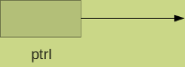
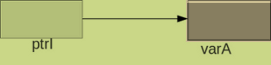
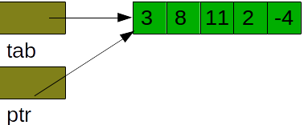
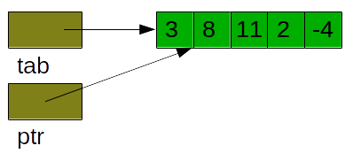

Langage C
Les pointeurs
Les pointeurs
Introduction
Vous avez noté dans la présentation du langage qu'un des intérêts du C est son efficacité. Une des raisons de ces bonnes performances tient à la gestion aisée de la mémoire, proche de ce que permet un langage d'assemblage. La manipulation des adresses mémoire se fait au moyen des pointeurs. Un pointeur est un type particulier, capable de conserver l'adresse d'un byte de la mémoire. Le pointeur est intimement lié au type de la donnée stockée à cette adresse de manière à en respecter les contraintes . Dans le paragraphe suivant nous abordons l'utilisation des pointeurs.
Utilisation
La définition d'une variable de type pointeur, nécessite de spécifier le type de la donnée qui sera accédée par le pointeur, le symbole utilisé est le caractère *. Par exemple,
int *ptrI;définit ptrI comme étant un pointeur sur un int (une variable qui contient l'adresse du premier byte d'une zone mémoire pouvant contenir un int). Tel que défini, le pointeur n'a pas été initialisé et il n'y a pas de réservation de place mémoire pour la valeur pointée.  Il contient donc une valeur quelconque qui peut être l'adresse d'une zone mémoire interdite, l'adresse d'un zone déjà utilisée, etc. Il doit donc être initialisé avant d'être utilisé.
Pour être initialisé, il doit recevoir une adresse; différentes possibilités s'offrent à nous :
- l'adresse d'une variable déjà défine, pour l'obtenir, il faut utiliser l'opérateur &.
ptrI = &varA;
ptrI reçoit l'adresse de la variable varA.

- l'adresse contenue dans un autre pointeur (du même type)
int *autrePtr = ptrI;
autrePtr reçoit l'adresse contenue dans le pointeur ptrI . - l'adresse d'un tableau
ptrI = tab;
ptrI reçoit l'adresse du tableau tab, c-à-d l'adresse du premier élément du tableau (&tab[0]) - l'adresse d'une zone mémoire dynamique (voir plus bas)
- ou encore l'adresse NULL spécifiant une adresse inacessible. Cette valeur sera également utilisée comme valeur de retour pour indiquer que une fonction ne s'est pas terminée correctement.
Le contenu de la mémoire (la déréférenciation) est obtenu en appliquant l'opérateur * au pointeur, comme le montre l'exemple suivant :
printf("%d", *ptrI);
La priorité des opérateurs
Nous avons abordé la priorité des principaux opérateurs lors de la présentation du langage. Nous pouvons ajouter à la liste les opérateurs liés à la manipulation des pointeurs:
| Niveau de priorité | Opérateur | description | Associativité |
|---|---|---|---|
| 17 | [] | indice de tableau | gauche |
| (...) | appel de fonction | ||
| 16 | ++ | post-incrémentation | gauche |
| -- | post-décrémentation | ||
| 15 | ++ | pré-incrémentation | droite |
| -- | pré-décrémentation | ||
| 15 | sizeof | calcule la taille d'une variable(d'un type) | droite |
| ~ | complément à 1 (inversion des bits) | ||
| ! | non logique | ||
| + | identité (opérateur unaire) | ||
| - | changement de signe (complément à 2) | ||
| & | adresse | ||
| * | indirection, déréférenciation | ||
| 14 | (type) | cast, changement forcé de type | droite |
| 13 | * | multiplication | gauche |
| / | division | ||
| % | modulo (uniquement si opérandes entiers) | ||
| 12 | + | addition | gauche |
| - | soustraction |
Les conversions de pointeurs
Les compilateurs C remplacent automatiquement les tables par des pointeurs, en y appliquant l'arithmétique des pointeurs pour convertir les indices. En C, un tableau est donc considéré comme un pointeur constant, sa valeur (l'adresse en mémoire des données) est invariante. D'autres conversions explicites (par cast) sont permises
| type de destination (cast) | type d'origine |
|---|---|
| type entier | pointeur |
| T* ou void* | un type entier void* Q* |
| type à gauche | type permis à droite (sans cast) |
|---|---|
| void* | 0 ou T* ou void* |
| T* ou void* | 0 ou T* ou void* |
Mémoire dynamique
Vous avez vu dans le cours de langage d'assemblage qu'il existe plusieurs segments pour constituer un programme : le code segment qui contient toutes les lignes de codes, le data segment qui contient les données initialisées, le bss qui regroupe les variables globales non initialisées à la compilation (elles seront dans ce cas mise à zéro), la pile qui mémorise les informations utiles des sous-programmes et le heap. C'est cette partie de la mémoire que le programme va utiliser pour alimenter les demandes de mémoire dynamique.
Dans un programme C, la mémoire dynamique est allouée en réponse à l'appel de la fonction malloc, ou d'une fonction dérivée calloc ou realloc.
La fonction malloc alloue le nombre de bytes demandé dans l'argument, cette mémoire est accédée grâce au pointeur retourné par la fonction. En cas de problème, la fonction renvoie un pointeur nul NULL.. Il est donc impératif de toujours tester le code de retour de la fonction. Voici un exemple de création d'une zone mémoire pouvant contenir une valeur double :
double *ptrD;
if ((ptrD = (double*)malloc(sizeof(double))) == NULL){
perror("Allocation dynamique de ptrD impossible");
return 1;
}De même, la fonction malloc permet de créer des tableaux dynamiques, comme dans l'exemple suivant qui crée un tableau de 10 int :
int *tabDyn;
if ((tabDyn = (int*)malloc(10*sizeof(int))) == NULL){
perror("Allocation dynamique de tabDyn impossible");
return 1;
}
La particularité de la fonction calloc est d'allouer une zone mémoire initialisée à zéro tandis que la fonction realloc permet de réallouer une zone mémoire en en modifiant la taille tout en conservant le contenu stocké dans la mémoire.
if ((tabDyn = (int*)realloc(tabDyn, 20*sizeof(int))) == NULL){
perror("Allocation dynamique de tabDyn impossible");
return 1;
}Dans cet exemple, la table tabDyn est réallouée, éventuellement à un autre endroit de la mémoire, sa taille est doublée mais le contenu est conservé.
Pour une gestion saine de l'espace mémoire, il est recommandé de libérer la mémoire dynamique devenue inutile dans l'application pour éviter des fuites de mémoire, zones mémoires qui ne sont plus accessibles, donc perdues pour l'application. Cette libération de mémoire se fait grâce à la fonction free
free(tabDyn);.
Arithmétique des pointeurs
Le langage C permet de modifier la valeurs d'un pointeur en y appliquant des expressions mettant en jeu une arithmétique particulière, l'arithmétique des pointeurs. Dans cette technique, le compilateur prend en compte la taille de l'élément pointé lors de l'ajout (ou suppression) d'une ou de plusieurs unités, comme dans l'exemple suivant
int *ptr, tab[5]; ptr = tab;

ptr++;

où l'incrémentation permet d'ajouter au pointeur ptr un nombre de bytes égal à la taille de l'élément et donc d'accéder à l'élément suivant de la table. Comme toujours en C, il n'y a pas de vérification et la prudence reste de vigueur.La soustraction de 2 pointeurs de même type donne le nombre d'éléments qui séparent les 2 adresses.
indice = ptr-tab;L'addition de 2 pointeurs est permise par le compilateur mais le résultat sera non significatif, sans doute hors de l'espace d'adressage du programme. Les autres opérations sont sans objet.
Parcours d'une table par pointeurs
Il est plus efficace de parcourir une table en utilisant un pointeur, car de cette façon, on évite le calcul de l'indice à chaque itération. Par exemple, le code
int i, taille = 10, table[10];
for (i = 0; i < taille; i++)
printf("%d\n", table[i]);
sera remplacé avec bonheur par la version utilisant un pointeur
int * q;
for (q = table; q - table < taille; q++)
printf("%d\n", *q);
Bernard Henriet © 2015